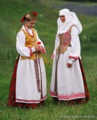

Welcome to drabužiai
Drabužiai Archives | MUR MUR apranga
2020.10.28 07:54Mano paskyra Kontaktai Prisijungti Registracija | Search SUSISIEKITE
+370 691 77086 Kategorijos Titulinis Drabužiai Suknelės Palaidinės Kelnės, šortai Sijonai Švarkeliai Liemenės Bodžiai Paltai Džemperiai Išpardavimas Dovanų kuponai Apie mus Search Pagrindinis Parduotuvė Drabužiai
Drabužiai
Filter 1 2 … 7 8 SuknelėsAlyvinė suknelė Pūstarankovis
0 out of 5 € 40.00 su PVM Pasirinkti savybes Greita peržiūra Kelnės, šortaiAlyvinės kelnės su kantu
0 out of 5 € 30.00 su PVM Pasirinkti savybes Greita peržiūra PalaidinėsAlyvinis Pūstarankovis
0 out of 5 € 30.00 su PVM Pasirinkti savybes Greita peržiūra Drabužiai , SuknelėsBaklažaninė suknelė Romantika
0 out of 5 € 45.00 su PVM Pasirinkti savybes Greita peržiūra Kelnės, šortaiBordinės veliūrinės kelnės
0 out of 5 € 30.00 su PVM Pasirinkti savybes Greita peržiūra Kelnės, šortaiBordinės veliūrinės tiesios kelnės
0 out of 5 € 30.00 su PVM Pasirinkti savybes Greita peržiūra DžemperiaiBordinis veliūrinis džemperis
0 out of 5 € 30.00 su PVM Pasirinkti savybes Greita peržiūra PalaidinėsDaili kakavinė veliūrinė palaidinė
0 out of 5 € 30.00 su PVM Pasirinkti savybes Greita peržiūra SijonaiDaili žalia veliūrinė palaidinė
0 out of 5 € 30.00 su PVM Pasirinkti savybes Greita peržiūra Kelnės, šortaiDailios kakavinės veliūrinės kelnės
0 out of 5 € 30.00 su PVM Pasirinkti savybes Greita peržiūra PalaidinėsGeltona daili palaidinė
0 out of 5 € 30.00 su PVM Pasirinkti savybes Greita peržiūra PalaidinėsGeltona palaidinė Figūra
0 out of 5 € 30.00 su PVM Pasirinkti savybes Greita peržiūra 1 2 … 7 8Paieška
Filtruoti pagal dydį
show blocks helper 2-3 m. (1) 2-3, 3-4 (0) 3-4 m. (1) 4-5 m. (1) 5-6 m. (1) 6-7 m. (1) XS (107) S (119) M (119) L (115) XL (98) XXL (19) XXXL (3) Turime sandėlyjeKategorijos
Uncategorized (1) Drabužiai (89) Džemperiai (8) Suknelės (16) Palaidinės (21) Kelnės, šortai (32) Sijonai (8) Švarkeliai (3) Paltai (1) Išpardavimas (40) Kita (5) Dovanų kuponai (5)REKOMENDUOJAME
TOP Pasirinkti savybes Greita peržiūra PalaidinėsMarga veliūrinė palaidinė
0 out of 5 € 30.00 su PVM TOP Pasirinkti savybes Greita peržiūra PalaidinėsSmėlinė daili palaidinė
0 out of 5 € 30.00 su PVM TOP Pasirinkti savybes Greita peržiūra SuknelėsPilka suknelė su apykakle
0 out of 5 € 45.00 su PVM TOP Pasirinkti savybes Greita peržiūra Kelnės, šortaiJuodos tvirtos kelnės
0 out of 5 € 30.00 su PVMGAUKITE NAUJIENAS PIRMIEJI
NAUJIENLAIŠKIO UŽSAKYMAS Adresas: Klaipėdos g. 143 A, Panevėžys, LT-37189 Telefonas: +370 691 77086 El. pašto adresas: info@murmurapranga.lt Darbo valandos: Kasdien 10:00 - 20:00Naudinga informacija
Pristatymas Apmokėjimas Keitimas / Grąžinimas Pirkimo taisyklės Privatumo nuostatos © 2020 MUR MUR apranga. Visos teisės saugomos. Facebook Instagram You've just added this product to the cart:PERŽIŪRĖTI KREPŠELĮ Continue Titulinis Drabužiai Suknelės Palaidinės Kelnės, šortai Sijonai Švarkeliai Liemenės Bodžiai Paltai Džemperiai Išpardavimas Dovanų kuponai Apie mus Mano paskyra Kontaktai Prisijungti Registracija Siekdami pagerinti Jūsų naršymo kokybę, statistiniais ir rinkodaros tikslais šioje svetainėje naudojame slapukus (angl. "cookies"), kuriuos galite bet kada atšaukti pakeisdami savo interneto naršyklės nustatymus ir ištrindami įrašus apie slapukus. Privatumo nuostatos Sutinku Privatumo nuostatos Close
Privacy Overview
This website uses cookies to improve your experience while you navigate through the website. Out of these cookies, the cookies that are categorized as necessary are stored on your browser as they are essential for the working of basic functionalities of the website. We also use third-party cookies that help us analyze and understand how you use this website. These cookies will be stored in your browser only with your consent. You also have the option to opt-out of these cookies. But opting out of some of these cookies may have an effect on your browsing experience. Necessary Necessary Always EnabledNecessary cookies are absolutely essential for the website to function properly. This category only includes cookies that ensures basic functionalities and security features of the website. These cookies do not store any personal information.
Non-necessary Non-necessaryAny cookies that may not be particularly necessary for the website to function and is used specifically to collect user personal data via analytics, ads, other embedded contents are termed as non-necessary cookies. It is mandatory to procure user consent prior to running these cookies on your website.
